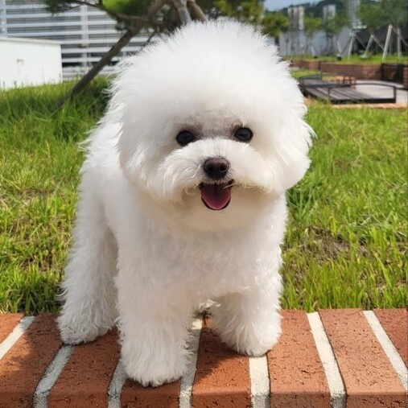

비숑 프리제 Bichon frisé
보송한 털과 동그란 머리가 특징인 프랑스, 벨기에 출신 소형견 입니다. 국제 공인 견종 9그룹에 속하는 견종 중 하나입니다. 어원은 프랑스어 비숑 아 푸알 프리제(Bichon à poil frisé '약간 곱슬거리는 털').에서 따왔으며 애칭으로 비숑으로도 많이 불립니다.
보송한 털과 동그란 머리가 특징인 프랑스, 벨기에 출신 소형견 입니다. 국제 공인 견종 9그룹에 속하는 견종 중 하나입니다. 어원은 프랑스어 비숑 아 푸알 프리제(Bichon à poil frisé '약간 곱슬거리는 털').에서 따왔으며 애칭으로 비숑으로도 많이 불립니다.
키는 23~31cm, 몸무게는 5.4kg~8.2kg 사이입니다. 다리가 짧은편으로, 성견임에도 아장아장 뒤뚱뒤뚱 걷습니다. 너비가 있는 체형입니다.
이름처럼 특유의 복슬복슬한 털을 갖고있습니다. 풍성하게 부풀어오른 듯한 느낌으로 잘 관리해 놓으면 마치 솜사탕이나 목화 같은 모습이 됩니다. 보기와 다르게 털 빠짐은 없는 편에 속합니다. 머리 모양을 커다란 원형으로 미용하는 경우가 많은데, 비숑을 키우고 있는 주인들은 이 머리 모양을 '하이바'라는 애칭으로 부릅니다.
인상은 전반적으로 웃는 상에 활발하고 명랑하여 고양이, 앵무새와도 잘 지낼 만큼 성격도 좋습니다. 가끔 그 명랑함이 지나쳐 자신들의 내면 에너지를 발산할 때가 있는데 비숑 견주들은 다른 견주들이 그렇듯 이를 비숑 타임이라고 표현합니다. 엄청 뛰어다니고 산책 중에 다른 개를 만나면 특유의 친화력으로 반갑다고 상대 견공 주변을 우다다 하기도 합니다. 주변에 너무 호기심과 관심이 많고 주의가 산만해서, 주인의 지시와 교류에 집중해서 특정 행동이나 반응을 하도록 훈련시키기가 어렵습니다.
독립심이 강해 혼자 집을 지키게 해도 얌전하며, 헛짖음이나 하울링을 잘하지 않습니다. 또한 낙천적인 면모도 있어 특별한 경우가 아니라면 더더욱 짖지 않는 편입니다.
비숑프리제의 수명은 대량 13~16년입니다. 그중에는 21년으로 장수한 기록이 있는 비숑프리제도 있습니다.
모질이 가늘어 미용하기가 쉽지 않아 다른 견종보다 미용비가 많이 나오는 편입니다. 사실 애초에 흔히 사진에서 볼 수 있는 비숑 프리제의 모양새를 만드는 미용을 할 수 있는 샵 자체가 극히 적습니다. 국내에서 키우는 사람도 적은 편이고, 빗질의 경우 배냇털은 하루에 두 번, 성견은 하루에 한 번 정도 맘먹고 해줘야 털이 엉키지 않습니다.
비숑프리제는 일반적으로 다리의 뼈가 가늘기 떄문에 골절되기 쉽거나 슬개골 탈구 등으로 인해 걷기 힘들어지는 경우도 있습니다. 만일 걸을 때 다리를 들고 걷거나 절뚝 거리는 등 파행 증상이 보이면 수의사의 진찰을 받아야 합니다.
어릴때 사회성을 기르지 않으면 잘 짖는 강아지가 될 수 있고, 이때는 목소리가 매우 우렁차기 때문에 훈육에 있어 주의가 필요합니다.